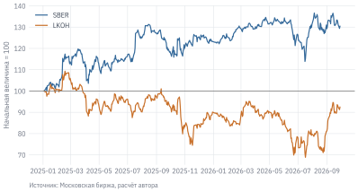
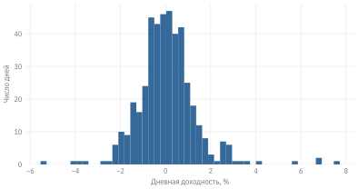

Код
price = 280.0
quantity = 100
price * quantity
#> 28000.0Код в этой книге короткий: обычно это 5–15 строк, которые загружают данные, что-то считают и строят график. Чтобы читать и менять такой код, не нужно быть программистом. Достаточно понимать несколько десятков конструкций языка и трёх библиотек: NumPy для вычислений, pandas для таблиц и matplotlib для графиков. Это приложение собирает их в одном месте.
Приложение не заменяет учебник по Python. Оно отвечает на практический вопрос: что нужно знать, чтобы уверенно работать с кодом глав и ноутбуков курса. Каждый пример стоит запустить у себя и немного изменить: поменять тикер, дату, ставку. Перед запуском полезно предсказать результат. Если предсказание не совпало с выводом, вы нашли место, которое пока понимаете неточно, и это самая ценная информация при обучении.
Данные: stocks.parquet, sectors.csv (см. данные книги). Нужно знать: ничего; приложение рассчитано на тех, кто начинает с нуля.
Код курса удобнее всего запускать в ноутбуке (notebook) – документе, который состоит из ячеек. Ячейка бывает двух видов: с кодом и с текстом в формате Markdown. Ноутбуки открываются в Jupyter на своём компьютере или в Google Colab в браузере. Расширение файла – .ipynb.
Ячейку с кодом запускает сочетание Shift + Enter. Под ячейкой появляется результат: всё, что напечатано функцией print(), и значение последней строки ячейки. Предыдущие строки ячейки тоже выполняются, но их значения не выводятся:
price = 280.0
quantity = 100
price * quantity
#> 28000.0За выполнением кода стоит ядро (kernel) – запущенный процесс Python, который хранит в памяти все созданные переменные. Переменная price из ячейки выше останется доступной во всех следующих ячейках, пока ядро работает.
Ядро помнит не то, что написано в ноутбуке сейчас, а то, что было выполнено. Это главный источник путаницы у начинающих. Допустим, вы выполнили ячейку price = 280.0, затем исправили её на price = 300.0, но не запустили заново. В памяти осталось 280, и все последующие расчёты будут использовать старое число, хотя на экране написано 300. Бывает и обратное: вы удалили ячейку, в которой создавалась переменная, а ноутбук продолжает работать – до первого перезапуска.
Ноутбук работает у автора, но падает у проверяющего. Почти всегда причина в том, что ячейки выполнялись не по порядку или какая-то переменная осталась в памяти от удалённого кода. Перед сдачей работы перезапустите ядро и выполните все ячейки сверху вниз: в Jupyter – Kernel → Restart Kernel and Run All Cells, в Colab – Среда выполнения → Перезапустить сеанс и выполнить все. Если ноутбук дошёл до конца без ошибок, его результат воспроизводим.
В Google Colab ничего устанавливать не нужно: Python и основные библиотеки уже есть, достаточно Google-аккаунта и браузера. Это самый быстрый способ начать. Минус в том, что сеанс Colab временный: после перезапуска все переменные и скачанные файлы пропадают, и ноутбук нужно выполнить заново.
На своём компьютере нужен Python 3.11 или новее. Проще всего установить дистрибутив Miniconda и создать для курса отдельное окружение – изолированную копию Python со своим набором пакетов. Тогда пакеты курса не будут конфликтовать с другими программами:
conda create -n qf python=3.12
conda activate qf
pip install -r requirements.txt
jupyter labФайл requirements.txt лежит в корне репозитория книги и перечисляет все нужные пакеты. Как скачать репозиторий и данные, описано в разделе 1.3. Кроме Jupyter, ноутбуки открывают редакторы VS Code и Positron; на результат расчётов выбор редактора не влияет.
Переменная – это имя, связанное со значением. Знак = в Python означает не равенство, а присваивание: вычисли выражение справа и запомни результат под именем слева. Поэтому запись, бессмысленная в математике, в коде совершенно нормальна:
cash = 100_000 # подчёркивание разделяет разряды и не влияет на число
cash = cash - 28_000 # купили акций на 28 тыс. руб.
cash
#> 72000Имена переменных пишут строчными буквами, слова разделяют подчёркиванием: start_date, risk_free_rate. Хорошее имя объясняет, что лежит в переменной, и избавляет от комментариев. Сравните x = 0.16 и key_rate = 0.16.
У каждого значения есть тип. Числа бывают целыми (int) и дробными (float, от floating point – число с плавающей точкой). Тип можно узнать функцией type():
print(type(100), type(280.5), type("SBER"), type(True))
#> <class 'int'> <class 'float'> <class 'str'> <class 'bool'>Арифметические операции привычны, кроме двух: возведение в степень записывается как **, а не ^, и есть отдельное целочисленное деление.
| Операция | Запись | Пример | Результат |
|---|---|---|---|
| сложение, вычитание |
+, -
|
280 - 275 |
5 |
| умножение, деление |
*, /
|
7 / 2 |
3.5 |
| целочисленное деление, остаток |
//, %
|
7 // 2, 7 % 2
|
3, 1
|
| степень | ** |
1.16 ** 3 |
1.560896 |
Например, вклад 100 тыс. руб. под 16% годовых с ежегодной капитализацией через три года вырастет до:
100_000 * (1 + 0.16) ** 3
#> 156089.59999999995Что вернёт сравнение 0.1 + 0.2 == 0.3: True или False? Запишите ответ, потом запустите код.
Дробные числа хранятся в компьютере в двоичном виде, поэтому многие десятичные дроби представлены не точно. Отсюда известный результат:
0.1 + 0.2 == 0.3
#> FalseДля финансовых расчётов это почти никогда не важно: погрешность составляет около \(10^{-16}\). Но сравнивать дробные числа через == не стоит. Для сравнения есть функция math.isclose(), а в pandas и NumPy – np.isclose().
Строка (str) – текст в кавычках: "SBER", '2026-01-01'. Строки можно складывать ("SB" + "ER"), узнавать их длину функцией len() и менять методами вроде .upper() и .lower().
На практике со строками чаще всего приходится выводить числа в читаемом виде. Для этого служат f-строки: перед кавычкой ставится буква f, а внутри фигурных скобок пишется выражение и, через двоеточие, формат:
value = 28_045.5
ret = 0.0842
print(f"Стоимость пакета: {value:,.0f} руб.")
#> Стоимость пакета: 28,046 руб.
print(f"Доходность: {ret:.1%}")
#> Доходность: 8.4%Формат :,.0f означает «разделить тысячи запятой, без знаков после точки», :.1% – «умножить на 100 и показать один знак после точки со знаком процента». Формат меняет только вид числа: в переменной ret по-прежнему хранится 0.0842, а не 8,4.
Сравнение возвращает логическое значение (bool): True или False. Операторы сравнения – == (равно), != (не равно), <, <=, >, >=. Условия объединяют словами and, or, not:
price = 280.0
price > 250 and price < 300
#> TrueНе путайте = и ==. Первое присваивает значение, второе сравнивает два значения. Ошибка if price = 250: вызовет SyntaxError.
Особое значение None означает «ничего»: например, функцию, которая ничего не возвращает, или ещё не заданный параметр. С None нельзя производить вычисления.
Отдельные числа встречаются редко. Обычно у нас набор тикеров, ряд цен, состав портфеля. Для хранения нескольких значений в Python есть контейнеры. В финансовых расчётах чаще всего нужны четыре.
Список (list) – упорядоченный набор значений в квадратных скобках:
tickers = ["SBER", "GAZP", "LKOH", "MGNT"]
len(tickers)
#> 4Какой тикер вернёт tickers[1]? Сколько элементов и какие вернёт tickers[1:3]? Ответьте до того, как прочитаете следующий абзац.
Элементы списка нумеруются с нуля: первый элемент – tickers[0], второй – tickers[1]. Отрицательный номер считает с конца: tickers[-1] – последний элемент. Срез tickers[1:3] возвращает элементы с номерами 1 и 2: левая граница включается, правая – нет.
print(tickers[0], tickers[-1], tickers[1:3])
#> SBER MGNT ['GAZP', 'LKOH']Нумерация с нуля и правило «правая граница не включается» сначала кажутся неудобными, но к ним быстро привыкают. Они согласованы: tickers[:2] и tickers[2:] вместе дают весь список без повторов и пропусков.
Список можно изменять: менять элементы, добавлять новые методом .append(), сортировать функцией sorted(). Функции sum(), min(), max() работают со списками чисел:
closes = [280.74, 279.33, 276.35, 272.45] # SBER, закрытие 23–28.09.2026
closes.append(274.65) # добавили 29.09.2026
sum(closes) / len(closes)
#> 276.704Кортеж (tuple) похож на список, но записывается в круглых скобках и не может быть изменён после создания. Кортеж удобен для небольшой группы связанных значений: тикер и цена, начальная и конечная дата периода. Кортеж можно распаковать в несколько переменных:
period = ("2021-01-04", "2026-11-03")
start, end = period
start
#> '2021-01-04'Словарь (dict) хранит пары «ключ – значение» и позволяет найти значение по ключу. Это естественный способ записать портфель: тикер → число акций.
portfolio = {"SBER": 100, "LKOH": 5, "GAZP": 300}
prices = {"SBER": 274.65, "LKOH": 5_369.0, "GAZP": 97.58} # закрытие 29.09.2026
portfolio["LKOH"]
#> 5Ключи в словаре уникальны. Если присвоить значение существующему ключу, старое значение будет заменено; если ключа нет, он будет добавлен: portfolio["MGNT"] = 2. Обращение к отсутствующему ключу вызывает ошибку KeyError. Методы .keys(), .values() и .items() возвращают ключи, значения и пары; мы воспользуемся ими в разделе о циклах.
Множество (set) хранит только уникальные значения, без порядка. Оно полезно, когда нужно убрать повторы или сравнить два набора. Например, какие бумаги портфеля отсутствуют в списке тикеров, по которым у нас есть данные?
set(portfolio) - set(tickers)
#> set()Ответ пуст: все три бумаги портфеля есть в списке. Если добавить в портфель бумагу, которой нет в tickers, она появится в результате. Такая проверка часто нужна перед расчётом: она ловит опечатки в тикерах и бумаги, которые выпали из данных.
| Контейнер | Запись | Изменяемый | Когда использовать |
|---|---|---|---|
| список | [1, 2, 3] |
да | упорядоченный ряд значений |
| кортеж | (1, 2) |
нет | несколько связанных значений, распаковка |
| словарь | {"SBER": 100} |
да | поиск значения по ключу |
| множество | {1, 2, 3} |
да | уникальные значения, сравнение наборов |
Код не всегда должен выполняться одинаково. Конструкция if выполняет блок строк, только если условие истинно. Блок выделяется отступом в четыре пробела – в Python отступы являются частью синтаксиса, а не оформлением.
Упрощённый пример: налог с прибыли от продажи акций по ставке 13%; при убытке налога нет.
profit = -15_000
if profit > 0:
tax = 0.13 * profit
else:
tax = 0
tax
#> 0Если вариантов больше двух, добавляют ветки elif («иначе если»). Python проверяет условия сверху вниз и выполняет первую подходящую ветку:
ret = -0.12
if ret > 0.10:
label = "сильный рост"
elif ret > 0:
label = "рост"
elif ret > -0.10:
label = "снижение"
else:
label = "сильное снижение"
label
#> 'сильное снижение'Цикл for повторяет блок кода для каждого элемента контейнера. Посчитаем стоимость портфеля: для каждой бумаги умножим число акций на цену и накопим сумму.
total = 0
for ticker, quantity in portfolio.items():
total = total + quantity * prices[ticker]
total
#> 83584.0Метод .items() возвращает пары «ключ – значение», и на каждом шаге цикла пара распаковывается в переменные ticker и quantity. Если нужен номер шага, используют enumerate(), а для повторения заданное число раз – range(): range(5) даёт числа 0, 1, 2, 3, 4.
Цикл естественно описывает рост капитала по годам. Пусть годовые доходности были +10%, −5% и +20%:
wealth = 100
for year, r in enumerate([0.10, -0.05, 0.20], start=1):
wealth = wealth * (1 + r)
print(f"Год {year}: {wealth:.1f}")
#> Год 1: 110.0
#> Год 2: 104.5
#> Год 3: 125.4Итог – 125,4, а не 125, как дала бы сумма доходностей. Доходность каждого года начисляется на уже изменившийся капитал. Подробнее об этом – в главе о доходности и риске (раздел 4.1).
Частая задача – построить новый список, применив операцию к каждому элементу старого. Это можно сделать циклом, но в Python есть более короткая запись – списковое включение (list comprehension):
returns = [0.10, -0.05, 0.20, -0.15, 0.08]
growth = [1 + r for r in returns]
losses = [r for r in returns if r < 0]
print(growth)
#> [1.1, 0.95, 1.2, 0.85, 1.08]
print(losses)
#> [-0.05, -0.15]Читать эту запись удобно справа налево: «для каждого r из returns, если r меньше нуля, взять r».
Цикл while повторяет блок, пока условие истинно. Он нужен, когда число повторений заранее неизвестно. За сколько лет вклад под 16% годовых удвоится?
wealth, years = 1.0, 0
while wealth < 2:
wealth = wealth * 1.16
years = years + 1
years
#> 5Если условие никогда не станет ложным, цикл будет выполняться бесконечно. В Jupyter его останавливает кнопка Interrupt (■).
Функция – именованный фрагмент кода, который принимает входные значения (аргументы) и возвращает результат. Встроенными функциями вы уже пользовались: len(), sum(), print(). Свою функцию стоит написать, когда один и тот же расчёт повторяется несколько раз: код становится короче, а ошибку достаточно исправить в одном месте.
Функция объявляется словом def, результат возвращается словом return. Строка в тройных кавычках сразу после объявления – документация функции; её показывает help().
def future_value(amount, rate, years, periods_per_year=1):
"""Будущая стоимость вклада при капитализации periods_per_year раз в год."""
n = periods_per_year
return amount * (1 + rate / n) ** (n * years)
print(future_value(100_000, 0.16, 3))
#> 156089.59999999995
print(future_value(100_000, 0.16, 3, periods_per_year=12))
#> 161095.6598320968Аргумент periods_per_year имеет значение по умолчанию: если его не указать, капитализация ежегодная. При ежемесячной капитализации вклад за три года вырастет сильнее – на 5 006 руб. Аргументы можно передавать по порядку или по имени. Именованная запись длиннее, но защищает от перепутанных местами ставки и срока.
Чистая приведённая стоимость (net present value, NPV) проекта – сумма его денежных потоков, дисконтированных по ставке \(r\):
\[ \text{NPV} = \sum_{t=0}^{T} \frac{CF_t}{(1 + r)^t}. \tag{A.1}\]
Запишем формулу функцией. Номер периода \(t\) даёт enumerate():
def npv(rate, cashflows):
"""NPV потоков cashflows[0], cashflows[1], ... при ставке rate."""
return sum(cf / (1 + rate) ** t for t, cf in enumerate(cashflows))
cashflows = [-100, 40, 40, 0, 40]
npv(0.12, cashflows)
#> -6.977236047480236Проект с вложением 100 и тремя поступлениями по 40 при ставке 12% имеет отрицательную NPV: дисконтированные поступления не покрывают вложение.
Внутренняя норма доходности (IRR) – ставка, при которой NPV равна нулю. Решить уравнение явно нельзя, но его можно решить численно. Функция brentq из библиотеки SciPy ищет корень функции на отрезке, где она меняет знак. Ей передаётся сама функция – в Python функцию можно передать как аргумент, как любое другое значение:
from scipy.optimize import brentq
def irr(cashflows, lower=-0.99, upper=1.0):
"""Один корень NPV на заданном интервале ставок (обе границы > -1)."""
if not -1 < lower < upper:
raise ValueError("Нужны границы -1 < lower < upper")
return brentq(lambda r: npv(r, cashflows), lower, upper)
print(f"IRR = {irr(cashflows):.2%}")
#> IRR = 8.36%Запись lambda r: npv(r, cashflows) создаёт короткую безымянную функцию одного аргумента \(r\). IRR ниже 12%, что согласуется с отрицательной NPV при этой ставке.
По умолчанию ищем ставку от −99% до 100%. Это ограничение интервала поиска, а не допустимых значений IRR: для потока [-100, 250] вызов irr([-100, 250], upper=2) даёт 150%. Если NPV на границах не меняет знак, brentq сообщает об ошибке; это ещё не доказывает отсутствие IRR вне интервала. При нескольких сменах знака денежных потоков возможны несколько корней.
Функцию полезно проверить на примере, ответ которого известен заранее. Для этого есть оператор assert: он ничего не делает, если условие истинно, и останавливает программу с ошибкой, если ложно.
assert abs(npv(0.0, [-100, 50, 50])) < 1e-12 # без дисконтирования NPV = сумма потоков
assert abs(npv(irr(cashflows), cashflows)) < 1e-9 # в точке IRR NPV равна нулюТакие проверки занимают одну строку, а ловят ошибки, которые иначе прошли бы незамеченными: перепутанный знак, индекс, начинающийся с единицы, процент вместо доли.
Ошибки – нормальная часть работы с кодом. Когда Python не может выполнить строку, он останавливается и печатает трассировку (traceback). Читать её нужно снизу вверх: последняя строка сообщает тип ошибки и её описание, выше указано место, где она произошла.
portfolio["MOEX"]
#> KeyError: 'MOEX'В книге показана только последняя строка сообщения; в Jupyter над ней будет трассировка с номером строки и фрагментом кода. KeyError: 'MOEX' означает, что в словаре portfolio нет ключа "MOEX". Причина почти всегда в опечатке или в том, что значение не было добавлено.
| Ошибка | Что означает | Типичная причина в ноутбуке |
|---|---|---|
SyntaxError |
Python не может разобрать строку | пропущена скобка, кавычка или двоеточие; = вместо ==
|
IndentationError |
неверный отступ | смешаны пробелы и табуляция, лишний отступ |
NameError |
имя не найдено | не выполнена ячейка, где создаётся переменная; опечатка |
TypeError |
операция не подходит для типа | сложение строки с числом; вызов функции с лишним аргументом |
KeyError |
нет такого ключа | опечатка в тикере или названии столбца, регистр букв |
IndexError |
нет элемента с таким номером | список короче, чем ожидалось; пустая выборка |
ValueError |
недопустимое значение | неверный формат даты; пустые данные |
ModuleNotFoundError |
пакет не установлен | не выполнен pip install; ноутбук открыт не в той папке |
Если причина непонятна, помогает простая последовательность. Прочитайте последнюю строку сообщения. Проверьте, выполнены ли все предыдущие ячейки. Напечатайте значения переменных из строки с ошибкой: часто оказывается, что в переменной лежит не то, что вы ожидали. Скопировать сообщение об ошибке в поисковик или ИИ-ассистенту тоже полезно, но объяснение нужно проверить на своём коде, а не принимать на веру.
Базовый Python умеет немного. Основная сила языка – в пакетах: готовых библиотеках, которые устанавливаются отдельно. Пакет устанавливается один раз командой pip install в терминале (в ноутбуке – !pip install), а в каждом ноутбуке подключается командой import:
import math
import numpy as np
import pandas as pd
import matplotlib.pyplot as plt
math.log(2)
#> 0.6931471805599453Сокращения np, pd и plt – общепринятое соглашение; их используют в документации, книгах и ответах ИИ-ассистентов. Конструкция from ... import ... подключает отдельную часть пакета. Так в книге подключается модуль qf, который лежит в папке книги: from qf import data.
Чтобы узнать, что делает функция, используйте help(функция) или, в Jupyter, вопросительный знак: np.log?. Список методов объекта показывает dir(). Документация основных библиотек подробная и содержит примеры; привычка заглядывать в неё экономит много времени.
Со списками неудобно считать. Прибавить 1 к каждому элементу списка нельзя: [1, 2, 3] + 1 вызовет TypeError, а умножение списка на число повторяет список. Для вычислений служит массив NumPy (np.array): операции с ним применяются сразу ко всем элементам.
prices_arr = np.array(closes) # пять цен SBER из раздела о списках
prices_arr[1:] / prices_arr[:-1] - 1
#> array([-0.00502244, -0.01066839, -0.01411254, 0.00807488])Мы посчитали дневные доходности одной строкой, без цикла: каждый элемент, начиная со второго, разделили на предыдущий. Такой стиль называют векторизацией. Векторизованный код короче и работает в десятки раз быстрее цикла, что важно на рядах в тысячи наблюдений.
NumPy содержит математические функции, которые тоже работают поэлементно (np.log, np.exp, np.sqrt), и статистические: np.mean, np.std, np.percentile. Функцию NPV из предыдущего раздела можно записать без цикла:
cf = np.array(cashflows)
t = np.arange(len(cf)) # 0, 1, 2, 3, 4
np.sum(cf / (1 + 0.12) ** t)
#> -6.977236047480236Сравнение массива с числом даёт массив логических значений – маску. По маске можно отобрать элементы:
rets = prices_arr[1:] / prices_arr[:-1] - 1
print(rets < 0)
#> [ True True True False]
print(rets[rets < 0])
#> [-0.00502244 -0.01066839 -0.01411254]Тот же приём работает в pandas и постоянно встречается в книге: отобрать дни с падением, бумаги с высокой капитализацией, годы с отрицательной доходностью.
Для моделирования нужны случайные числа. Генератор создаётся функцией np.random.default_rng(); аргумент seed фиксирует последовательность, чтобы результат повторялся при каждом запуске. Смоделируем год торговли акцией с дневной доходностью в среднем 0,05% и волатильностью 2%:
rng = np.random.default_rng(seed=42)
daily = rng.normal(loc=0.0005, scale=0.02, size=252)
path = 100 * np.cumprod(1 + daily)
print(f"Конец года: {path[-1]:.1f}, минимум: {path.min():.1f}")
#> Конец года: 85.1, минимум: 79.3Функция np.cumprod считает накопленное произведение: каждый элемент path – стоимость вложения в соответствующий день. Запустите пример с другим seed, и путь окажется совсем другим при тех же параметрах. Это полезная интуиция: одна реализация случайного процесса мало говорит о его свойствах.
pandas – основная библиотека для работы с таблицами. В ней два главных объекта. Series – одномерный ряд значений с подписями (индексом), например цены одной акции по датам. DataFrame – таблица, каждый столбец которой является Series, а все столбцы имеют общий индекс.
Загрузим данные двух акций за 2025–2026 гг. Функции модуля qf возвращают обычные таблицы pandas:
stocks = data.load_stocks(["SBER", "LKOH"], start="2025-01-01")
stocks.shape
#> (884, 12)Атрибут .shape показывает размер таблицы: число строк и столбцов. С новой таблицей всегда стоит начинать одинаково: посмотреть первые строки, названия и типы столбцов.
stocks.head(3)
#> date ticker open ... adj_close shares market_cap
#> 0 2025-01-03 LKOH 7255.0 ... 5807.169973 692865762.0 4.934590e+12
#> 1 2025-01-06 LKOH 7114.5 ... 5779.446892 692865762.0 4.911033e+12
#> 2 2025-01-08 LKOH 7090.0 ... 5780.262277 692865762.0 4.911725e+12
#>
#> [3 rows x 12 columns]stocks.dtypes
#> date datetime64[ms]
#> ticker object
#> open float64
#> low float64
#> high float64
#> close float64
#> waprice float64
#> volume float64
#> value_rub float64
#> adj_close float64
#> shares float64
#> market_cap float64
#> dtype: objectТаблица хранится в длинном формате: каждая строка – одна бумага в один день, тикер записан в отдельном столбце. Метод .describe() выводит основные статистики по числовым столбцам, а .isna().sum() – число пропусков в каждом столбце.
Столбец выбирается по имени в квадратных скобках, несколько столбцов – списком имён. Строки отбирают по маске, как в NumPy:
sber = stocks[stocks["ticker"] == "SBER"]
sber[["date", "close", "volume"]].tail(3)
#> date close volume
#> 881 2026-09-25 276.35 17573507.0
#> 882 2026-09-28 272.45 25688835.0
#> 883 2026-09-29 274.65 18505319.0Условия объединяют операторами & (и) и | (или), каждое условие берётся в скобки: stocks[(stocks["ticker"] == "SBER") & (stocks["close"] > 300)]. Слова and и or с таблицами не работают.
Для доступа по подписям индекса служит .loc, по номерам строк – .iloc. Запись sber.iloc[0] – первая строка, sber.iloc[-1] – последняя; sber.loc[:, "close"] – столбец close целиком.
Для расчётов по нескольким бумагам удобнее широкий формат: даты по строкам, тикеры по столбцам. Метод .pivot() переворачивает длинную таблицу в широкую:
prices_df = stocks.pivot(index="date", columns="ticker", values="adj_close")
prices_df.tail(3)
#> ticker LKOH SBER
#> date
#> 2026-09-25 5374.0 276.35
#> 2026-09-28 5299.5 272.45
#> 2026-09-29 5369.0 274.65Теперь индекс таблицы – даты. Это открывает удобный отбор по периодам: prices_df.loc["2026-03"] вернёт все дни марта 2026 г., prices_df.loc["2025-06-01":"2025-12-31"] – второе полугодие 2025 г. Функция data.load_prices() сразу возвращает таблицу в широком формате; здесь мы проделали этот шаг сами, чтобы увидеть, как он устроен.
Арифметика с таблицами работает так же, как с массивами NumPy: поэлементно, с выравниванием по индексу. Метод .pct_change() считает изменение к предыдущей строке, то есть простую доходность:
returns_df = prices_df.pct_change().dropna()
returns_df.describe().round(4)
#> ticker LKOH SBER
#> count 441.0000 441.0000
#> mean 0.0000 0.0007
#> std 0.0191 0.0131
#> min -0.0773 -0.0554
#> 25% -0.0099 -0.0065
#> 50% -0.0012 0.0000
#> 75% 0.0088 0.0070
#> max 0.0795 0.0772Первая строка доходностей пуста – для первого дня нет предыдущего, – поэтому её удаляет .dropna(). Накопленный рост вложения даёт (1 + returns_df).cumprod(), а нормированные цены с начальным значением 100 – 100 * prices_df / prices_df.iloc[0].
Многие вопросы требуют свести дневные данные к месяцам или годам. Для смены частоты временного ряда есть .resample(). Код "ME" означает конец месяца, "YE" – конец года. Цена на конец каждого месяца и месячные доходности:
monthly = prices_df.resample("ME").last()
monthly.pct_change().tail(3).round(3)
#> ticker LKOH SBER
#> date
#> 2026-07-31 0.017 0.037
#> 2026-08-31 0.017 -0.002
#> 2026-09-30 0.140 -0.004Метод .groupby() делит таблицу на группы по значению столбца и применяет к каждой группе одну и ту же операцию. Например, средний дневной оборот в рублях по каждой бумаге:
stocks.groupby("ticker")["value_rub"].mean() / 1e9
#> ticker
#> LKOH 5.692325
#> SBER 10.571860
#> Name: value_rub, dtype: float64Результат – в миллиардах рублей. Оборот Сбербанка почти вдвое выше, чем у ЛУКОЙЛа: эта разница в ликвидности важна для торговых стратегий в главе о бэктестинге.
Данные из разных источников приходится объединять. Метод .merge() соединяет две таблицы по общему столбцу – так же, как функция ВПР в Excel, но сразу для всех строк. Добавим к бумагам отрасль из справочника книги:
sectors = data.load_reference("sectors")
last_day = stocks[stocks["date"] == stocks["date"].max()]
last_day[["ticker", "close", "market_cap"]].merge(sectors, on="ticker", how="left")
#> ticker close market_cap sector
#> 0 LKOH 5369.00 3.719996e+12 Нефть и газ
#> 1 SBER 274.65 5.928855e+12 Банки и финансыАргумент how="left" сохраняет все строки левой таблицы, даже если для тикера не нашлось отрасли: в этом случае в столбце sector будет пропуск. Проверка числа строк до и после объединения – хорошая привычка: если оно выросло, в правой таблице есть повторяющиеся ключи.
Пропущенные значения в pandas обозначаются NaN (not a number). Метод .isna() находит их, .dropna() удаляет строки с пропусками, .fillna() и .ffill() заполняют их – последний переносит вперёд предыдущее известное значение. С заполнением нужно быть осторожным. Перенос вперёд использует только прошлое и обычно безопасен; заполнение средним по всей выборке или перенос назад (.bfill()) приносит в прошлое информацию из будущего. Почему это опасно, разбирается в разделе 3.6.
Графики в книге строятся библиотекой matplotlib. Стандартный способ: создать рисунок (figure) и оси (axes) функцией plt.subplots(), нарисовать на осях данные и подписать их.
plot.use_book_style()
normalized = 100 * prices_df / prices_df.iloc[0]
fig, ax = plt.subplots()
ax.plot(normalized.index, normalized["SBER"], label="SBER")
ax.plot(normalized.index, normalized["LKOH"], label="LKOH")
ax.axhline(100, color="grey", linewidth=0.8)
ax.set_ylabel("Начальная величина = 100")
ax.legend()
plot.source(ax, "Московская биржа, расчёт автора")
plt.show()
У таблиц pandas есть метод .plot(), который делает то же короче: normalized.plot() рисует все столбцы с легендой. Его удобно использовать для быстрого взгляда на данные, а явное построение через ax – когда нужно настроить детали. Функции модуля qf.plot задают единый стиль графиков книги и добавляют подпись источника; без них графики получатся в стандартном стиле matplotlib.
Распределение величины показывает гистограмма:
fig, ax = plt.subplots()
ax.hist(returns_df["SBER"] * 100, bins=50)
ax.set_xlabel("Дневная доходность, %")
ax.set_ylabel("Число дней")
plt.show()
Сохранить рисунок в файл можно методом fig.savefig("chart.png", dpi=200). Для вставки в текст работы лучше подходит векторный формат: fig.savefig("chart.svg") или .pdf.
Чтобы читать код книги, описанного в приложении достаточно. Дальше навык растёт от практики, а не от чтения. Несколько привычек делают её эффективнее.
int, float), строки, логические значения и None. Дробные числа нельзя сравнивать через ==.assert проверяет их на известных примерах.Задания А решаются без компьютера: предскажите результат, затем проверьте себя запуском. Задания Б выполняются на данных вашей акции. Задания В учат проверять ответы ИИ-ассистента. Задание Г – небольшой самостоятельный расчёт.
Что выведет каждая строка?
xs = [10, 20, 30, 40, 50]
print(xs[1], xs[-2], xs[1:3], len(xs[2:]))Чему равна переменная x после выполнения кода? Почему?
x = 100
for r in [0.5, -0.5]:
x = x * (1 + r)Почему код if price = 250: вызывает ошибку, а if price == 250: – нет?
В ячейке 1 создаётся rate = 0.16, в ячейке 2 считается npv(rate, cashflows). Студент исправил ячейку 1 на rate = 0.12 и запустил только ячейку 2. Какую ставку использовал расчёт?
Что вернёт prices_df.loc["2026-03"] и чем это отличается от prices_df.iloc[3]?
data.load_stocks(). Сколько в таблице строк, какие первая и последняя даты, есть ли пропуски в столбцах close и adj_close?adj_close и найдите три худших месяца. С какими событиями они связаны?period_return(prices, start, end), которая возвращает изменение цены между двумя датами. Проверьте её через assert на примере, ответ которого известен.data.load_index()) за последние три года.Попросите ИИ-ассистента написать функцию IRR без сторонних библиотек. Проверьте её на потоках [-100, 40, 40, 0, 40] и сравните с результатом brentq из раздела A.5. Как функция ведёт себя на потоках [-100, 230, -132], у которых две IRR (10% и 20%)? Запишите, какие допущения сделал ассистент.
Ассистент написал код для средней дневной доходности каждой бумаги в 2026 г. Найдите в нём три ошибки, не запуская его, а затем проверьте себя запуском. Подсказка: посмотрите, в каком порядке идут строки таблицы df.
df = data.load_stocks(["SBER", "LKOH"], start="2026-01-01")
df["ret"] = df["close"].pct_change()
df.groupby("date")["ret"].mean()7 / 2 от 7 // 2?f"{0.0842:.1%}"?[1, 2, 3] + 1 вызывает ошибку, а np.array([1, 2, 3]) + 1 – нет?.bfill() опасно для финансовых данных?7 / 2 = 3.5 – обычное деление; 7 // 2 = 3 – целая часть от деления.8.4%: формат умножает на 100 и добавляет знак процента..pivot().